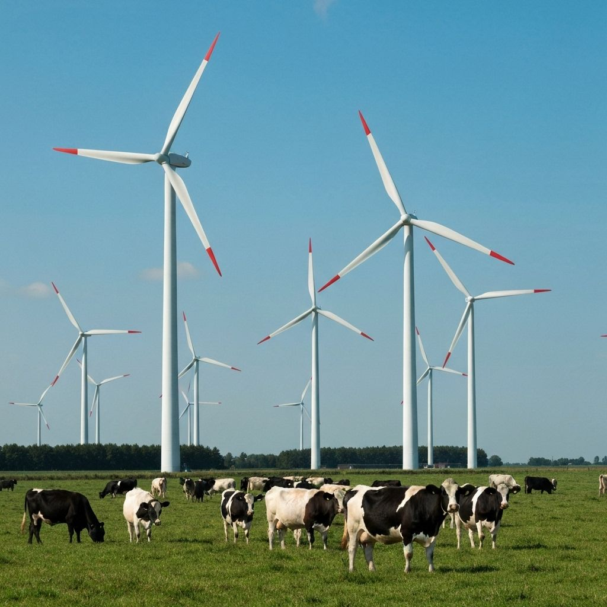
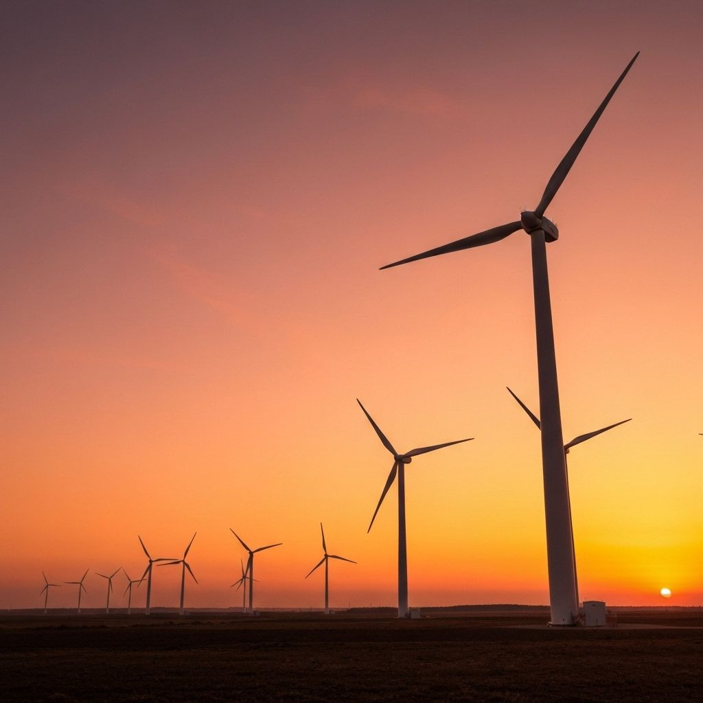
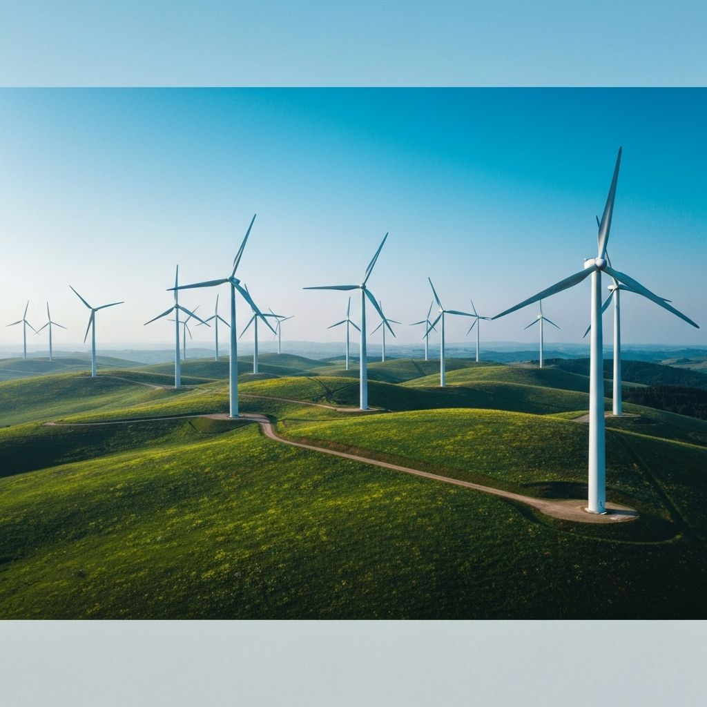
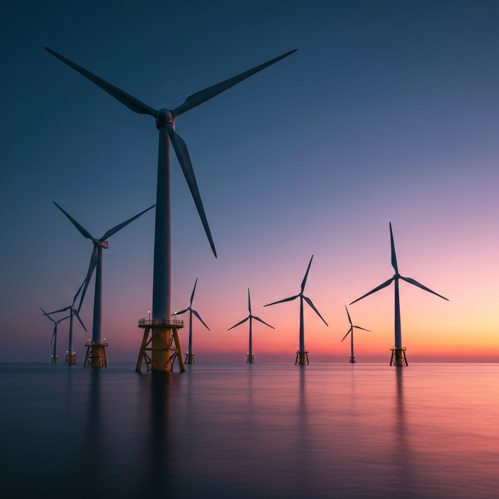
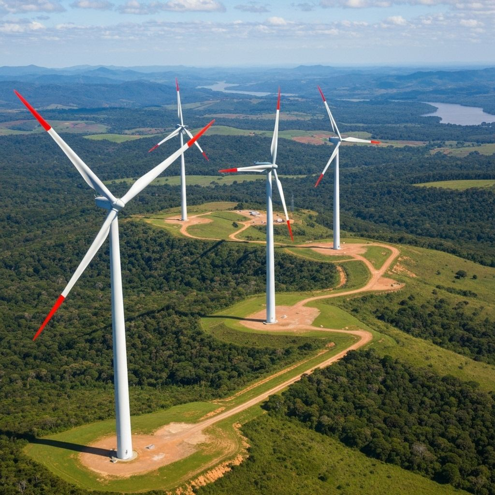
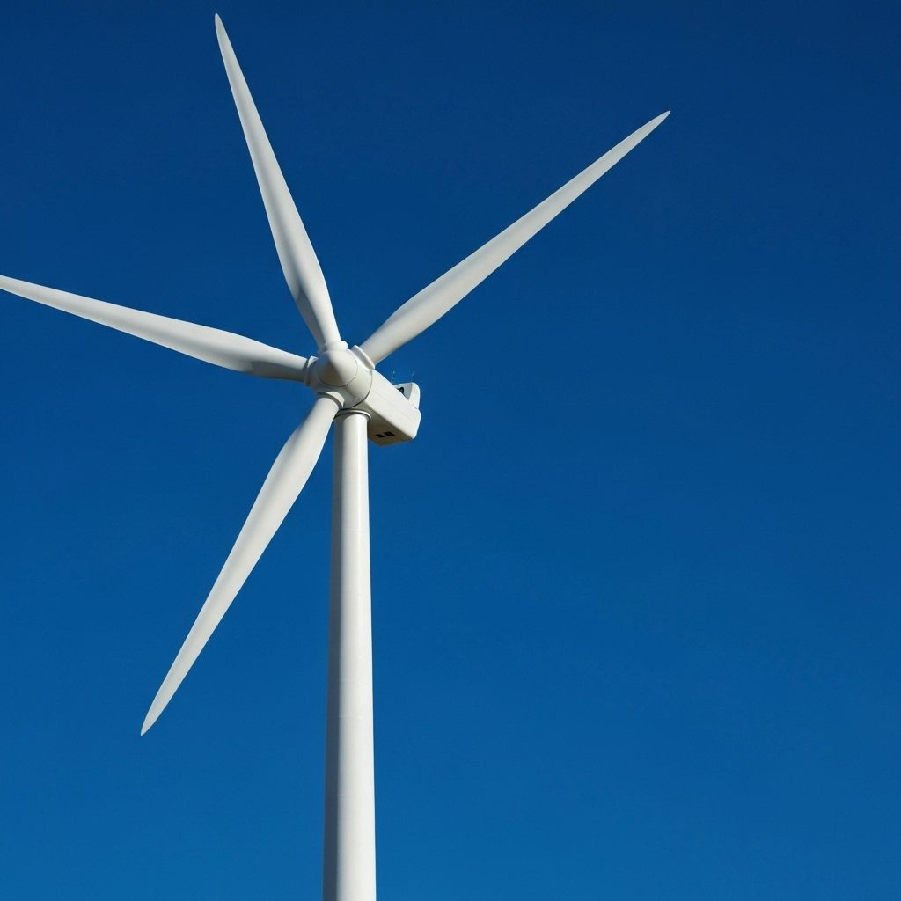

O que é Energia Eólica?
A energia eólica é a eletricidade gerada a partir da força dos ventos. O vento movimenta as hélices dos aerogeradores, que transformam a energia do ar em energia elétrica limpa e renovável.





A energia eólica é a eletricidade gerada a partir da força dos ventos. O vento movimenta as hélices dos aerogeradores, que transformam a energia do ar em energia elétrica limpa e renovável.


A energia eólica surgiu do uso antigo da força do vento, que já movimentava moinhos e embarcações. Com o avanço da tecnologia, passou a gerar eletricidade no final do século XIX e hoje é uma das principais fontes de energia renovável do mundo.
A energia eólica é uma das fontes mais sustentáveis que existem. Ela não polui o ar, reduz o uso de combustíveis fósseis e ajuda a combater o aquecimento global.


Apesar dos benefícios, a energia eólica também exige planejamento. A geração depende da intensidade dos ventos, os aerogeradores podem causar ruídos e a instalação precisa considerar impactos sobre comunidades próximas, paisagens e rotas de aves.